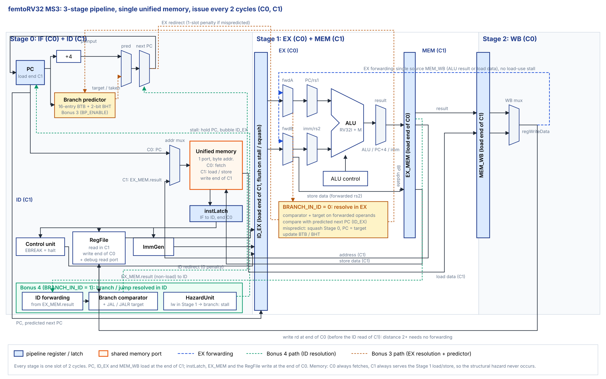
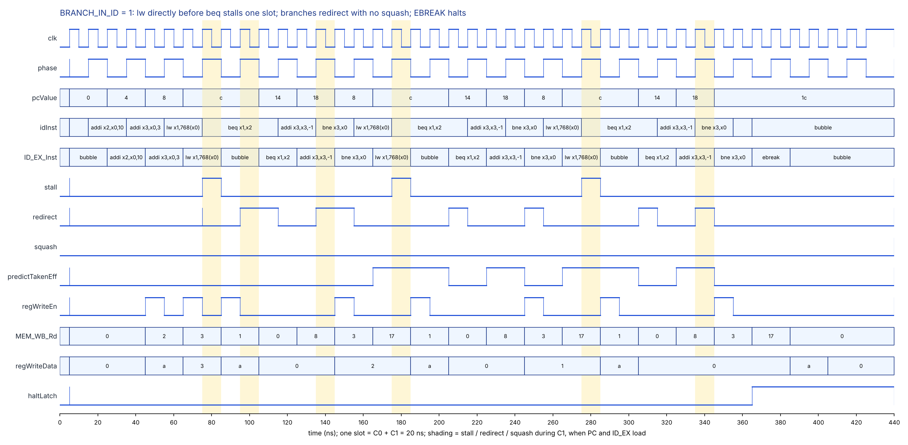
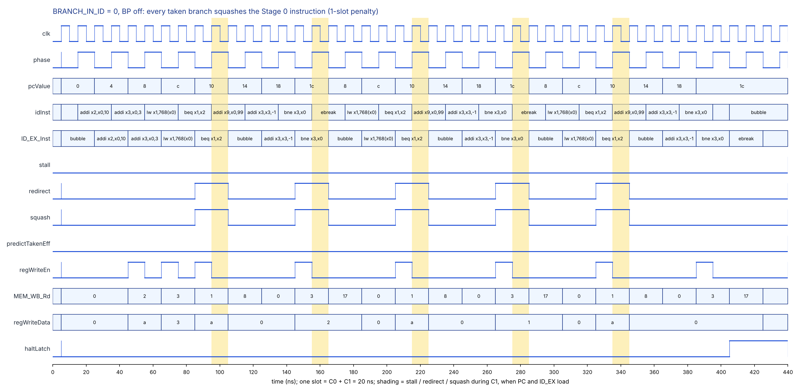
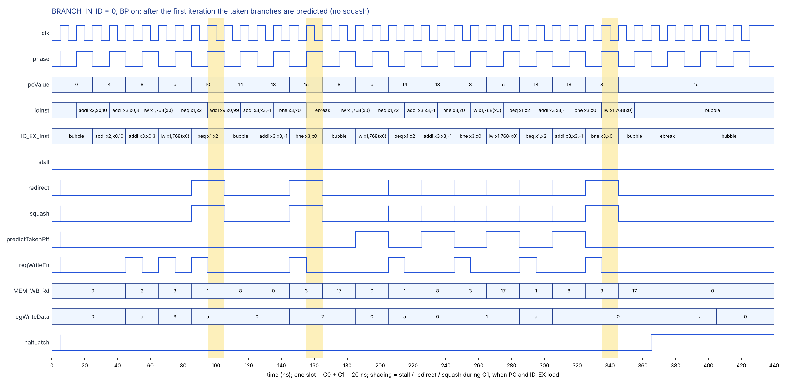

| Item | Status |
|---|---|
| ISA | All 42 RV32I instructions + 8 RV32M. EBREAK halts; ECALL, FENCE, FENCE.TSO, PAUSE are NOPs. |
| Pipeline | 3 stages of one 2-cycle slot each, single unified memory (C0 fetch, C1 data). |
| Bonuses claimed | Bonus 3 (2-bit BHT + BTB predictor) and Bonus 4 (branch resolution in ID with forwarding and stall). RV32M (Bonus 2) is implemented as an extra and not claimed. |
| Simulation | 160 / 160 directed checks in each branch mode; 48-instruction single-cycle test; unit tests; 4 assembly programs x 3 configurations; 17 / 18 mutants detected (1 equivalent). |
| Synthesis | Board top elaborates; Yosys reports no structural problems. Vivado bitstream not yet built. |
| FPGA | Wrapper, clocking, display and constraints written; board run and photos still to be added (Section 9). |
The project description allows one memory with one port. Fetch and data access therefore cannot share a cycle, so every pipeline stage takes one slot of two cycles, C0 and C1. The phase controller toggles every clock; the memory address multiplexer gives C0 to the fetch and C1 to the load or store of Stage 1. The structural hazard cannot occur by construction.
| Stage | C0 | C1 | Register at the stage boundary |
|---|---|---|---|
| Stage 0 | IF: memory reads the word at PC | ID: decode, register read, immediate (Bonus 4: branch resolution) | instLatch (end of C0), ID_EX (end of C1) |
| Stage 1 | EX: ALU, forwarding, branch resolution when BRANCH_IN_ID = 0 | MEM: memory load / store at EX_MEM address | EX_MEM (end of C0), MEM_WB (end of C1) |
| Stage 2 | WB: register file write at end of C0 | idle | none |
The PC loads at the end of C1. Because the register file is written at the end of C0 and read in C1, an instruction two or more slots behind its producer always reads the new value from the register file.

| Case (producer distance) | Handling | Stall slots |
|---|---|---|
| ALU to ALU / store, distance 1 | forward MEM_WB result to EX | 0 |
| Load to ALU / store, distance 1 | forward MEM_WB load data to EX | 0 |
| Anything, distance 2 or more | register file (written end of C0, read in C1) | 0 |
| Write to x0 | never forwarded (x0 guard in ForwardingUnit) | 0 |
| Term | Plain meaning |
|---|---|
| forwardA / forwardB | 2'b01 selects MEM_WB.regWriteData instead of the ID_EX register value. |
| regWriteData | MEM_WB load data or ALU / PC+4 / immediate result, chosen by WbFromMem. |
| stall | Bonus 4 only: PC holds (same word refetched), bubble into ID_EX. |
A parameter BRANCH_IN_ID selects where branches and jumps resolve. Both modes share all other logic and must end with identical architectural state; the testbench checks this.
| Property | BRANCH_IN_ID = 0 (base + Bonus 3) | BRANCH_IN_ID = 1 (Bonus 4) |
|---|---|---|
| Resolution point | EX (C0 of Stage 1), forwarded operands | ID (C1 of Stage 0) |
| Wrong next PC | squash Stage 0 (flush ID_EX), PC = target: 1 slot | PC loads the resolved target directly: 0 slots |
| Operand hazards | none (EX forwarding) | ALU result forwarded from EX_MEM; load directly before branch / JALR: 1 stall slot |
| Predictor effect | removes the penalty on learned branches | none (the next fetch already follows the resolved PC) |
| Wrong-path EBREAK | halt blocked while Stage 1 redirects | cannot occur |
16-entry direct-mapped BTB (index PC[5:2], tag PC[31:6], target) plus a 2-bit saturating counter per entry. Lookup at the fetch PC in C0; a taken prediction loads the BTB target. Counters start at 01; a taken branch that misses the BTB allocates at 10. Update happens when the branch resolves. Test 20 walks one branch through 10, 11, 11, 10, 01, 00, 00, 01, 10, 11, 11, 10, 11, so it reaches strongly not-taken, saturates, and returns to strongly taken; the log matches the expected state after every update.
A second comparator and target adder sit in ID. During C1 the Stage 1 instruction's ALU result is already in the EX_MEM latch, so it is forwarded to the comparator. A load in Stage 1 delivers its data in that same C1, so HazardUnit stalls a dependent branch or JALR for one slot; afterwards the value is in the register file.
| Program | ID mode | EX + predictor | EX, no predictor |
|---|---|---|---|
| 40 straight-line instructions | 82 | 82 | 82 |
| bne loop, 21 instructions retired | 42 | 46 (2 mispredicts) | 52 (5 mispredicts) |
| 12-iteration loop (Test 18) | 80 | 84 | 102 |
| Predictor walk + nested loops (Test 20) | 396 | 426 (15 mispredicts) | 466 (35 mispredicts) |
| Stale-value hazard suite (Test 21) | 500 (9 stalls) | 514 | 558 |
| MS2 full program vs single-cycle (Test 11) | 224 | 238 | 238 |
| all_instr.s | 268 | 284 | 284 |
| hazards.s | 112 | 132 | 132 |
| predictor.s | 582 | 656 | 730 |
Cycles until EBREAK latches. The predictor gives no gain on all_instr.s, hazards.s and Test 11 because their branches execute once, so nothing is learned.
| Layer | What it checks | Result |
|---|---|---|
| unit_tb.v | PhaseController, UnifiedMem (all widths), BranchPredictor states and aliasing, ForwardingUnit, HazardUnit (12 cases), PipelineReg | all pass |
| datapath_tb.v | single-cycle reference: 40 RV32I + 8 RV32M, ECALL as NOP, EBREAK halt at byte 472 | all pass |
| pipeline_tb.v | 23 directed tests, BP-on and BP-off twins, regression against the single-cycle datapath, structural monitors (no write in C0, PC changes only at end of C1). Run with BRANCH_IN_ID = 1 and = 0. | 160 / 160 in each mode |
| programs_tb.v + Testing/programs | 4 self-checking assembly programs (x31 = 0 failures, x30 = 0xC0DE), each in 3 configurations | 12 / 12 pass |
| Testing/mutation_test.py | 18 injected bugs in pipeline.v | 17 detected, 1 equivalent |
| Injected bug | Caught by mode |
|---|---|
| EX forwarding of rs1 / rs2 removed | ID and EX |
| ID forwarding of rs1 / rs2 removed | ID |
| load-to-branch stall removed; PC ignores stall | ID |
| no squash on EX redirect; wrong-path EBREAK halts | EX |
| JALR target bit 0 not cleared (ID and EX versions) | ID / EX |
| register file writes at end of C1; EX_MEM loads at end of C1 | ID and EX |
| predictor updated with the wrong PC; redirect compared with PC+4 | EX / ID |
| store data not forwarded; load data replaced by address | ID and EX |
| ID forwarding also forwards loads (survived) | equivalent: the stall always covers this case |
| Program | Content |
|---|---|
| all_instr.s | one self-checked instance of every RV32I and RV32M operation, sub-word loads and stores, x0 write |
| hazards.s | add / lw directly before taken and not-taken branches, JALR from ALU and from a load, JAL link to branch, load-ALU-store chain, load to store data, x0 write before a branch |
| predictor.s | loop (taken 15 times then exit), alternating branch, nested loops 5 x 4, never-taken branch |
| nops_halt.s | ECALL, FENCE, FENCE.TSO, PAUSE inside a dependent chain; instruction after EBREAK must not run |



datapath_board_pipelined.v only instantiates the pipeline and adds clocking and display. The program is chosen with the PROGRAM_FILE parameter (a byte-per-line hex file loaded by $readmemh into UnifiedMem).
| Control | Pin | Function |
|---|---|---|
| CLK100MHZ | E3 | system clock for debounce, clock generator and display scan |
| BTNC | N17 | step: one press = one CPU clock cycle (runMode = 0) |
| SW15 | V10 | reset |
| SW6 / SW7 | U18 / R13 | runMode (free run), fastMode (about 3 MHz instead of about 12 Hz) |
| SW0-1 | J15, L16 | LED view: instruction low / high, control flags, pipeline flags |
| SW2-5 | M13, R15, R17, T18 | display view: 0 PC, 1 next PC, 2 instruction in ID, 3 ALU result, 4 memory address, 5 memory data, 6 write-back data, 7 store data, 15 x[regSel] |
| SW8-12 | T8, U8 (LVCMOS18), R16, T13, H6 | regSel: register shown when display view = 15 |
| AN0-7, CA-CG, DP | J17 J18 T9 J14 P14 T14 K2 U13; T10 R10 K16 K13 P15 T11 L18; H15 | 8-digit hex display; decimal points and LD15 light on halt |
The CPU clock is a registered signal produced in the 100 MHz domain (CpuClockGen.v), so it is glitch free; a clock-enable scheme would be the production choice.
[FPGA photos: to be inserted after the board run.]
| Issue | Fix |
|---|---|
| ECALL halted the CPU (since MS2); the spec allows only EBREAK | control_unit halts only on inst[31:20] = 0x001; every test program now ends with EBREAK; Test 23 checks the NOPs |
| Pipeline had 5 stages (10-cycle latency, load-use stall) | restructured to the 3-stage organization: IF_ID removed, EX_MEM became the EX-to-MEM latch, single forwarding source, BRANCH_IN_ID parameter; expectations re-baselined |
| Board wrapper was a 470-line copy of the pipeline and referenced a missing display driver | wrapper now instantiates pipeline; new 8-digit hex driver, debouncer and CPU clock generator; debug ports and a debug register read port |
| Tests existed only inside the Verilog testbench | four assembly programs, assembled with LLVM, run unchanged in simulation and on the board |
| Mutation harness reported every run as a hang ("changes" contains "hang") | explicit timeout sentinel; results re-run |
cd Verilog SRC=$(ls *.v | grep -v -e _tb -e datapath_board) for m in 1 0; do iverilog -g2012 -Wall -Ppipeline_tb.BRANCH_IN_ID=$m -s pipeline_tb -o /tmp/p.out pipeline_tb.v $SRC vvp /tmp/p.out | tail -3 done iverilog -g2012 -Wall -s unit_tb -o /tmp/u.out unit_tb.v $SRC && vvp /tmp/u.out iverilog -g2012 -Wall -s datapath_tb -o /tmp/d.out datapath_tb.v $SRC && vvp /tmp/d.out | tail -3 sh ../Testing/programs/run_all.sh # needs llvm-mc, ld.lld, llvm-objcopy python3 ../Design/render_pipeline_waveforms.py
| Topic | Key fact | Number |
|---|---|---|
| Issue rate | one instruction per 2-cycle slot | CPI = 2 (no hazards) |
| Latency | 3 stages x 2 cycles | 6 cycles |
| Data hazards | single MEM_WB forward + register file written in C0 | 0 stalls |
| Branch, EX mode | squash Stage 0 on a wrong prediction | 1 slot |
| Branch, ID mode (Bonus 4) | resolved before the next fetch | 0 slots; 1 stall after a load |
| Predictor (Bonus 3) | 2-bit counters, 16-entry BTB | Test 20: 15 vs 35 mispredicts |
| Verification | directed + programs + mutation | 160 x 2, 12 / 12, 17 / 18 |